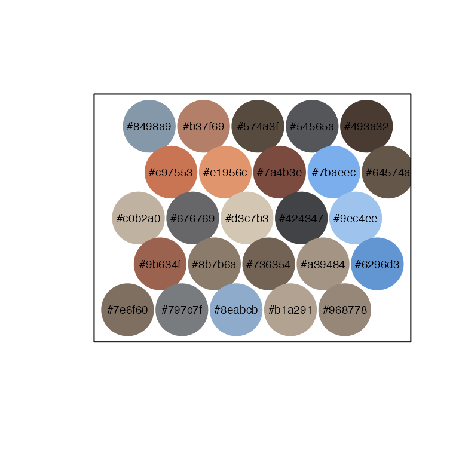
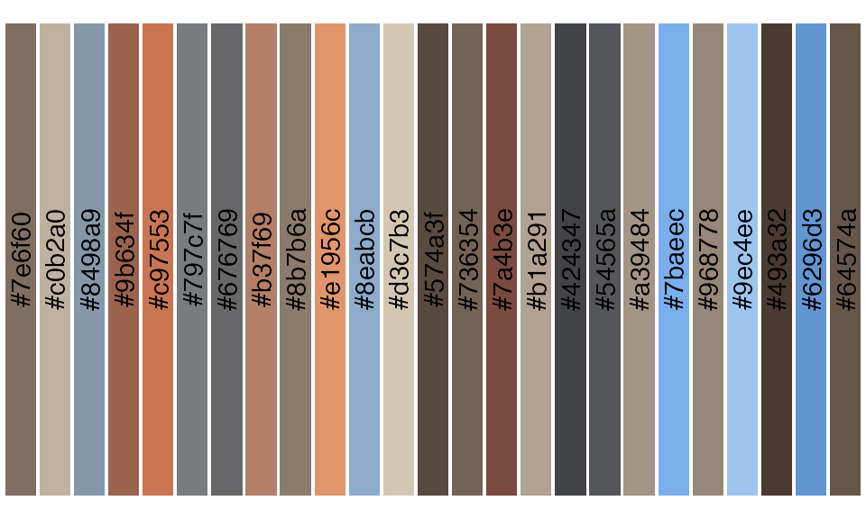
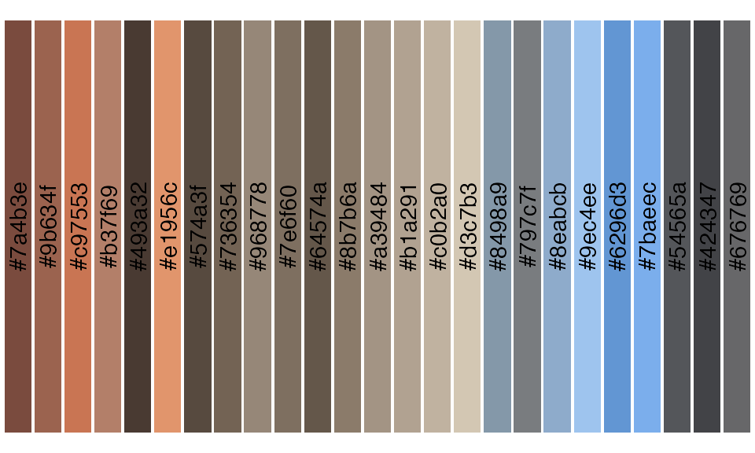
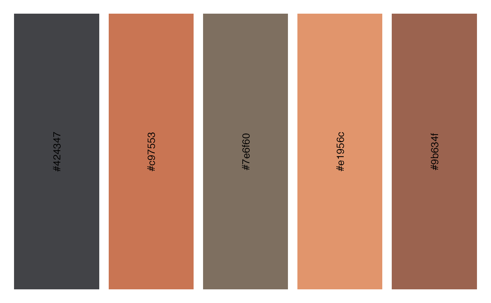
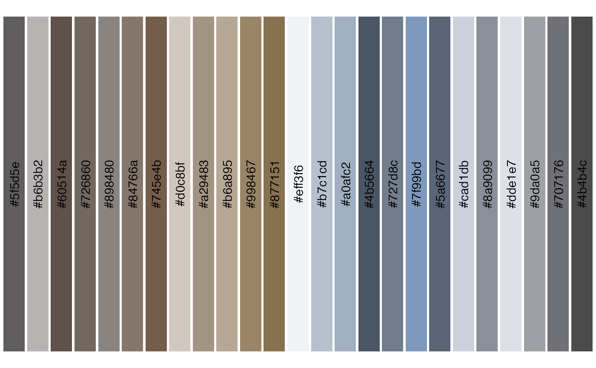

Overview
The lterpalettefinder package (LTER + Palette + Finder)
was initially developed simply to house hexadecimal code color palettes
manually extracted from photos taken at Long Term Ecological Research
sites. During its development its purpose expanded to include a set of
tools for automatically extracting those colors and visualizing the
derived palettes.
This vignette describes the main functions of
lterpalettefinder and demonstrates one possible use of its
workflow from the extraction of a palette from a picture to the
visualization of that palette.
library(lterpalettefinder)Start with a Picture

The lterpalettefinder workflow begins with a picture
from which you’d like to extract hexadecimal codes for the main colors
(“main” is defined later). This vignette will use this picture of a
prescribed fire in Iowa in 2018 (credit: Nick J Lyon) to allow for easy
visual comparison between the source photo and the palette returned by
the functions described below.
Extracting the Palette
The primary function of this package is platte_extract
which accepts the name and/or path to the image file in your working
directory. This function also includes an optional progress bar that is
switched off in the example below
fire_palette <- palette_extract(image = "lyon_fire.png", progress_bar = FALSE)The returned palette always contains the 25 most different colors (as identified by k-means clustering on the red, green, blue bands extracted from the image) stored as hexadecimal codes.
fire_palette
#> [1] "#69696a" "#4d4a4a" "#b3a594" "#a69787" "#847465" "#e3986e" "#99b7d9"
#> [8] "#9ec7f3" "#6196d4" "#575a5d" "#7aadeb" "#907f6f" "#865b4d" "#7a7c7d"
#> [15] "#8294a3" "#cf7b57" "#c2b4a2" "#6c5f51" "#615248" "#b6826c" "#d5c8b5"
#> [22] "#87a5c2" "#998b7c" "#796a5a" "#a66a55"Viewing the Palette
In our experience, few people can look at a string of hex codes and
instinctively interpret those as colors, so this package includes
palette_demo and palette_ggdemo to demonstrate
the extracted palettes. While there are some aesthetic differences
between the plots produced by the two functions the fundamental
difference is that ...demo creates a base R plot while
...ggdemo produces a ggplot2 plot.
Additionally, palette_demo includes built in export options
if desired
palette_demo(palette = fire_palette, export = FALSE)
palette_ggdemo(palette = fire_palette)
Organizing the Palette
You can also organize the colors into an order that approximates how
human eyes instinctively group colors using palette_sort.
The sorting isn’t perfect, but it is far easier to view similar colors
than the random order returned by palette_extract
fire_sort <- palette_sort(palette = fire_palette)
palette_ggdemo(palette = fire_sort)
If desired, palette_extract does include a
sort argument (defaults to “FALSE”) that can be activated.
That said, it does take marginally longer to compute (~0.5 seconds) the
sorting so if running palette_extract iteratively it will
be faster to leave sort = FALSE until color sorting is
necessary.
Simplifying a Palette
It may be the case that you’d want fewer than 25 colors from a given
image but don’t want to have to go through and manually select the ones
you want. palette_subsample randomly selects the desired
number of colors from a vector of hexadecimal codes for just such an
occasion! It also allows you to se the random seed internally for
reproducibility
fire_sub <- palette_subsample(palette = fire_palette, wanted = 5, random_seed = 42)
palette_ggdemo(palette = fire_sub)
Using a Pre-Built Palette
The original impetus for lterpalettefinder was to allow
users to select pre-set palettes and while the package has evolved
beyond that, palette_find does serve this purpose.
palette_find allows users to specify the site, number of
colors, type of palette (e.g., sequential, diverging, etc.), and–if
known–the name of the palette to identify and return an official
palette.
official_palette <- palette_find(name = "hike")
#> Exactly one palette identified. Output cropped to only HEX codes for ease of plotting
palette_ggdemo(palette = official_palette)
Looking Ahead
If you have ideas for other functions that
lterpalettefinder could contain, post them as a GitHub
Issue and we’ll review them as soon as possible!